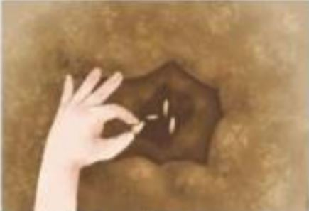
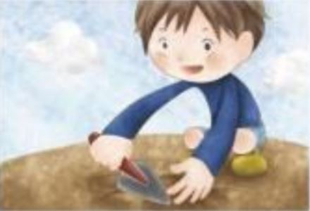
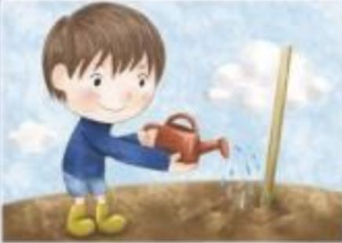
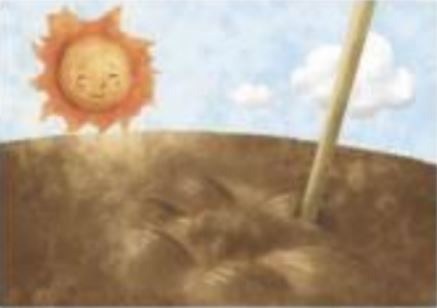
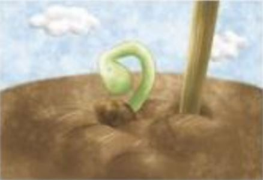
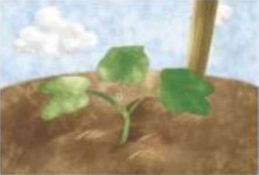
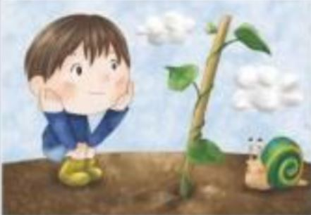
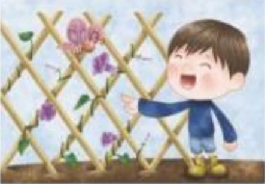

Growing a Seed
Do you know how a seed grows ?
See the pictures and click the correct answer.
See the pictures and click the correct answer.

1.Plant aseed flower

2.Cover the seed withwater soil

3.Sprinkle the seed with a little water sand

4.Bake the seed in thesnow sun

5.The little seed is ready to grow flow

6.Littlestem flower

7.The stem jump climbs

8.The flower bud is ready toopen close